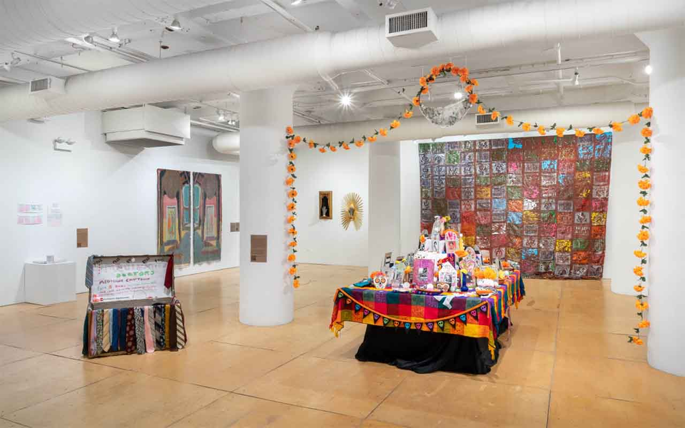

Imagination Doctors Virtual Tour
This virtual tour of Imagination Doctors is co-led by UIC Disability Cultural Center Director Margaret Fink, co-curator Denny Mwaura, and exhibiting artist William Estrada. Together, they take you through a range of newly commissioned artworks that evoke longevity, memory, ephemerality, silliness, and self-determination, all of which are present in Pros Arts Studio’s archive. C0-curator Mwaura discusses the exhibition’s making process while Estrada elaborates on his artistic contribution and experiences as a teaching artist with Pros Arts Studio. register: https://uic.zoom.us/meeting/register/M4KFpD5-SJilTWBIs3iOdw#/registration
ACCESS INFORMATION: This program is free and open to the public. CART (live captions) and ASL will be available on Zoom. We’ll have a camera connecting our virtual audience to the gallery. Descriptions of objects will be integrated into the presentation. For questions and access accommodations, email gallery400engagement@gmail.com.
ABOUT
William Estrada is an arts educator and multidisciplinary artist. His art and teaching are a collaborative discourse that critically re-examines public and private spaces with people to engage in radical imagination. He has presented in various panels regarding community programming, arts integration, and social justice curricula. He is currently a Visual Arts Teacher at Telpochcalli Elementary and a Visiting Assistant Professor at the School of Art and Art History at UIC. His current research is focused on developing community-based, culturally relevant projects that center power structures of race, economy, and cultural access in contested spaces.
Margaret Fink is the Director of UIC’s Disability Cultural Center, one of seven Centers for Cultural Understanding and Social Change. A cultural studies and literary scholar, she has published on disability representation in graphic fiction and taught courses on disability in American literature, reality television, and discourses of the mind/body distinction. After experiencing disability culture spaces at disability studies conferences, her work as a teacher blossomed into an interest in disability culture-informed access practices and how they shape spaces for inclusion and belonging. More recently, she has collaborated on pieces about accessible conference spaces, inclusive theater, and creative explorations of disability experience during the pandemic.